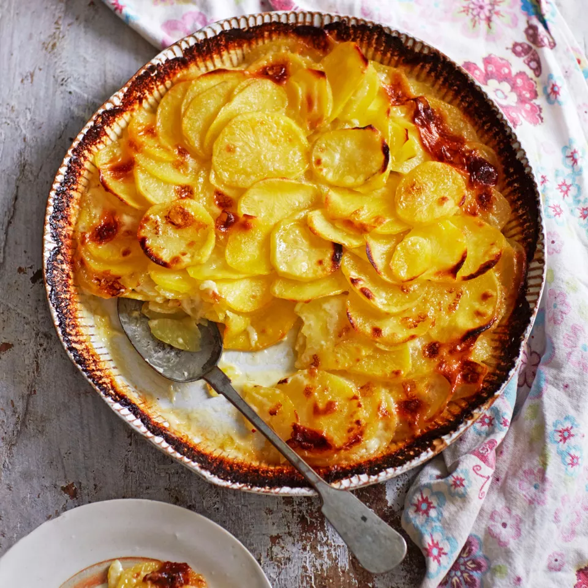

potato gratin

Description
It's just a wonderful dish to eat and to make.
Ingredients
- potato
- ½ l milk
- 3 gloves of garlic
- salt
- pepper
Steps To Make It
- Peel the potatos
- Cut them to little slices
- Cut the garlic
- Pour some oil into a baking pan
- Add the garlic
- Place the slices like the skin of a snake